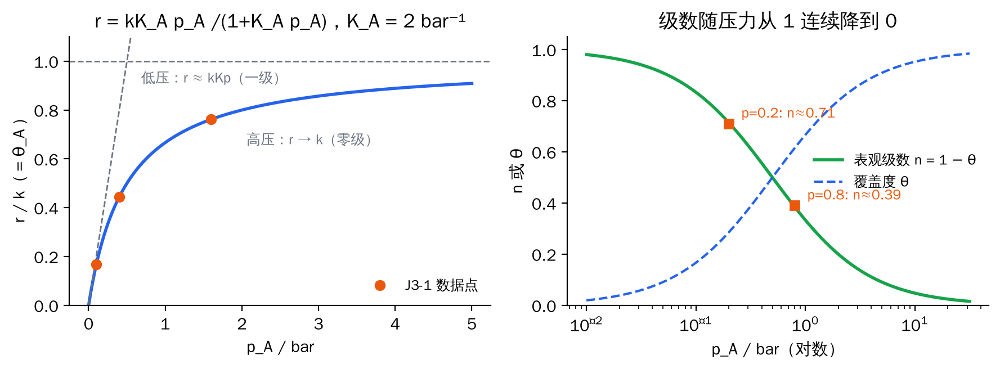
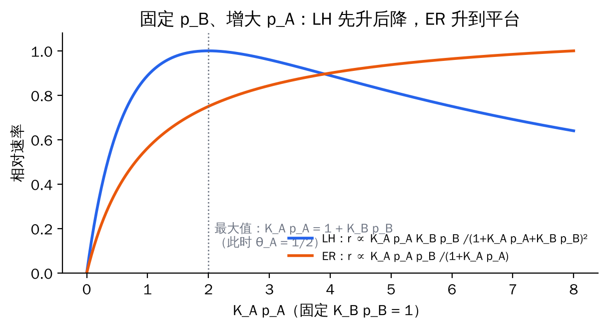
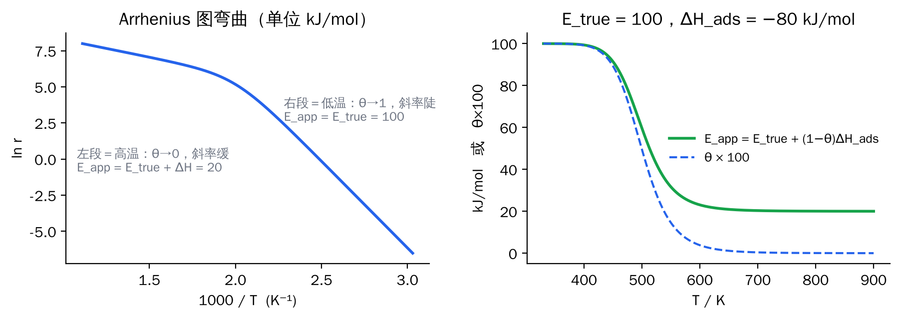

5 Langmuir–Hinshelwood 单分子反应 A → B
机理
A + * ⇌ A*（快，平衡） → A* → B*（慢，速控步，速率常数 k） → B* ⇌ B + *（快，平衡）
"吸附平衡"意味着 θ_A、θ_B 可以直接用 4.3 节的竞争 Langmuir 式。
公式
$$r=k\,\theta_A=\frac{k\,K_Ap_A}{1+K_Ap_A+K_Bp_B}$$
初速率（还没有产物，p_B = 0）：
$$r_0=\frac{kK_Ap_A}{1+K_Ap_A}$$
推导：表观级数 n_A = 1 − θ_A，n_B = −θ_B
表观级数的严格定义是对数斜率 \(n_i=\partial\ln r/\partial\ln p_i\)。取对数：
$$\ln r=\ln(kK_A)+\ln p_A-\ln(1+K_Ap_A+K_Bp_B)$$
对 ln p_A 求导：第二项给 1；第三项给 \(p_A\cdot\dfrac{K_A}{1+K_Ap_A+K_Bp_B}=\theta_A\)。所以
$$n_A=1-\theta_A,\qquad n_B=-\frac{K_Bp_B}{1+K_Ap_A+K_Bp_B}=-\theta_B$$
物理含义：空位比例决定了速率还能随 p_A 增长多少；产物占多少位点，就把速率压低多少。
两种极限
- 弱吸附或低压（K_Ap_A ≪ 1）：r ≈ kK_Ap_A，一级。表面大部分空着，压力翻倍，A* 翻倍。
- 强吸附或高压（K_Ap_A ≫ 1）：r ≈ k，零级。表面已被占满，再加压也挤不上更多 A。
- 产物强吸附（K_Bp_B ≫ 1 + K_Ap_A）：r ≈ kK_Ap_A/(K_Bp_B)，对 B 为 −1 级，对 A 为一级。

图 F2 左：LH 单分子速率曲线（橙点为题 11 / J3-1 的数据）；右：表观级数 n = 1 − θ 随压力从 1 降到 0
应用
- 线性化求 k 和 K：\(\dfrac1{r_0}=\dfrac1k+\dfrac{1}{kK_A}\cdot\dfrac1{p_A}\)，1/r 对 1/p 作直线，截距 1/k，K = 截距/斜率。
- 两点求级数再求 θ、K：\(n=\ln(r_2/r_1)/\ln(p_2/p_1)\)，对应 \(p=\sqrt{p_1p_2}\)（ln p 坐标的中点），再由 θ = 1 − n，\(K=\theta/[p(1-\theta)]\)。见题 11。
- 经典实例：PH₃ 在 W 上分解——低压一级、高压零级；NH₃ 在热 W 或 Mo 表面分解——零级（表面饱和）；N₂O 在 Au 上分解——一级（弱吸附）。
6 Langmuir–Hinshelwood 双分子反应 A + B → P
机理A、B 都先吸附在同一种位点上（竞争吸附，快平衡），再由相邻的 A* 与 B* 在表面反应（速控步）。
公式
$$r=k\,\theta_A\theta_B=\frac{k\,K_AK_B\,p_Ap_B}{(1+K_Ap_A+K_Bp_B)^2}$$
推导 1：表观级数
$$\ln r=\text{const}+\ln p_A+\ln p_B-2\ln(1+K_Ap_A+K_Bp_B)$$
$$n_A=1-2\theta_A,\qquad n_B=1-2\theta_B$$
θ_A > 1/2 时 n_A < 0：负级数，加 A 反而变慢。
推导 2：速率最大值
固定 p_B，令 ∂r/∂p_A = 0（等价于 n_A = 0）：
$$(1+K_Ap_A+K_Bp_B)-2K_Ap_A=0\ \Rightarrow\ K_Ap_A=1+K_Bp_B$$
此时 \(\theta_A=\dfrac{1+K_Bp_B}{2(1+K_Bp_B)}=\dfrac12\)。也就是说，A 占满一半位点时速率最大；再多就把 B 挤走了。
物理图像反应要求 A* 和 B* 挨在一起。A 太少没得反应，A 太多 B 没地方待——"自中毒"（self-poisoning）。这也是 Sabatier 原理的动力学版本：吸附既不能太弱，也不能太强。
应用：Pt 上 CO 氧化
低温下 CO 吸附极强，表面几乎全是 CO（θ_CO → 1），O₂ 找不到空位，速率对 CO 呈负级数（约 −1）：CO 越多反应越慢。升温使 CO 部分脱附、空出位点，速率突然跃升，这就是汽车尾气催化剂的"起燃"（light-off）。见题 16。
7 Eley–Rideal 机理
机理只有 A 吸附；B 从气相直接撞上 A* 反应：A* + B(g) → P。
公式
$$r=k\,\theta_A\,p_B=\frac{k\,K_Ap_A\,p_B}{1+K_Ap_A},\qquad n_A=1-\theta_A\ (0\sim1),\qquad n_B=1$$
LH 与 ER 的区分
| 实验：固定 p_B，逐渐增大 p_A | LH 双分子 | ER |
|---|
| 速率曲线 | 先升后降，有最大值 | 升到平台，无最大值 |
| 对 A 的级数范围 | +1 → −1 | +1 → 0 |
| 对 B 的级数 | +1 → −1（看 θ_B） | 恒为 1 |
真实的 ER 反应很少见（例如气相 H 原子直接夺取吸附的 H 或 D），大多数多相催化反应是 LH 型。

图 F3 固定 p_B 时 LH 与 ER 速率对 p_A 的不同响应
8 表观活化能
公式
$$E_{app}\equiv-R\,\frac{\partial\ln r}{\partial(1/T)}=E_{true}+\sum_i n_i\,\Delta H_{ads,i}$$
推导（LH 单分子）
\(k=Ae^{-E_{true}/RT}\)，\(K=K_0e^{-\Delta H_{ads}/RT}\)，\(r=kKp/(1+Kp)\)。取对数后对 1/T 求导：
$$\frac{\partial\ln r}{\partial(1/T)}=-\frac{E_{true}}{R}-\frac{\Delta H_{ads}}{R}+\theta\,\frac{\Delta H_{ads}}{R}$$
（最后一项来自 \(\partial\ln(1+Kp)/\partial(1/T)=\theta\cdot\partial\ln K/\partial(1/T)\)）。乘以 −R：
$$E_{app}=E_{true}+(1-\theta)\,\Delta H_{ads}=E_{true}+n\,\Delta H_{ads}$$
三种情况
- 低覆盖（一级区）：E_app = E_true + ΔH_ads < E_true。温度升高时 k 变大，但 θ 变小，两者部分抵消，所以测到的活化能偏小。
- 高覆盖（零级区）：E_app = E_true。表面一直是满的，只剩表面反应本身。
- 强吸附抑制物（如 CO 自中毒，n_CO = −1）：E_app = E_true − ΔH_CO = E_true + |ΔH_CO|，比真实值大，因为必须先让 CO 脱附腾出位点。
温度跨越覆盖度变化区时，Arrhenius 图会
弯曲：低温段陡、高温段缓。

图 F6 LH 单分子反应的 Arrhenius 图与 E_app 随温度的变化（E_true = 100，ΔH_ads = −80 kJ/mol）
9 速控步判断总表（单分子 A → B，单一位点）
| 速控步 | 表面状态 | 初速率 r₀ 对 p_A | 判据 |
|---|
| A 的吸附 | A* 一上来就被转化，表面几乎是空的（或只有产物） | r₀ ≈ k_a p_A，一直一级 | 高压下也不饱和 |
| 表面反应 | A 吸附平衡，θ_A 按 Langmuir 变化 | r₀ = kK_Ap_A/(1+K_Ap_A)，1 → 0 | 级数随压力连续下降，n = 1 − θ |
| B 的脱附 | 表面被 B* 占满 | 通常近零级 | 速率基本与 p_A 无关 |
注意
这是 Hougen–Watson 初速率分析的标准结论。严格地说，如果表面反应 A* ⇌ B* 的平衡常数不大，脱附控制时 θ_B 也会随 p_A 按 Langmuir 形式变化，同样表现为 1 → 0。这时还要看产物分压、总压或温度的影响才能分清。考试按上表作答即可，但要会说出这个前提。
从数据判断机理的步骤
- 测不同 p_A 下的初速率，两点或作图求表观级数 n。
- 看 n 是否随压力变化：恒为 1 → 吸附控制或弱吸附；1 → 0 → 表面反应控制（LH 单分子）；出现负值 → 双分子 LH 自中毒。
- 线性化（1/r 对 1/p）求 k 和 K，检验两段算出的 K 是否一致——一致说明模型自洽。
- 测不同温度：由 E_app 与 n 的关系 \(E_{app}=E_{true}+n\Delta H_{ads}\) 分离出真实活化能和吸附热。